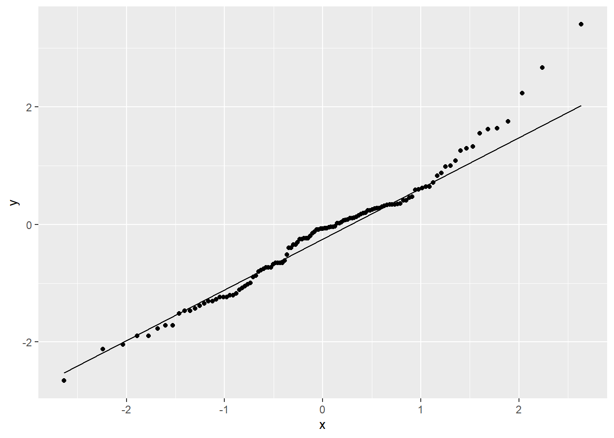

Analyses
Steve Brunwasser
2022-08-12
knitr::opts_chunk$set(echo = TRUE, warning = F, message = F)1 Prepare Workspace
Load packages
require( robumeta )
require( Hmisc )
require( ggplot2 )Load the data frame
load( 'dfsub.RData' )2 Descriptives
Look at the descriptive statistics for the key modeling variables
dfsub1 <- dfsub[, c('es','es.se','exp.012','mingen','hosp' ) ]
dfsub1$loges <- log( dfsub1$es )
label( dfsub1$loges ) <- 'Effect estimate on log scale'
label( dfsub1$es ) <- 'Effect estimate on linear scale'
label( dfsub1$es.se ) <- 'Standard error of log effect estimate'
html( describe( dfsub1 ) )6 Variables 342 Observations
es: Effect estimate on linear scale

| n | missing | distinct | Info | Mean | Gmd | .05 | .10 | .25 | .50 | .75 | .90 | .95 |
|---|---|---|---|---|---|---|---|---|---|---|---|---|
| 119 | 223 | 91 | 1 | 1.549 | 1.802 | 0.179 | 0.248 | 0.435 | 0.930 | 1.395 | 2.688 | 4.735 |
es.se: Standard error of log effect estimate

| n | missing | distinct | Info | Mean | Gmd | .05 | .10 | .25 | .50 | .75 | .90 | .95 |
|---|---|---|---|---|---|---|---|---|---|---|---|---|
| 118 | 224 | 71 | 1 | 0.5666 | 0.36 | 0.1270 | 0.1740 | 0.3225 | 0.5350 | 0.7075 | 0.9760 | 1.1950 |
exp.012: LRTI Exposure Ascertainment Window
| n | missing | distinct |
|---|---|---|
| 342 | 0 | 2 |
Value Not limited to first year of life Limited to first year of life Frequency 222 120 Proportion 0.649 0.351
mingen: Estimate Adjusted for Potential Genetic Confounding?
| n | missing | distinct |
|---|---|---|
| 342 | 0 | 2 |
Value No adjustment Adjustment Frequency 285 57 Proportion 0.833 0.167
hosp: LRTI Required Emergency Care of Hospitalization
| n | missing | distinct |
|---|---|---|
| 342 | 0 | 2 |
Value Emergency/Hospitalization Not Required
Frequency 63
Proportion 0.184
Value Emergency/Hospitalization Required
Frequency 279
Proportion 0.816
loges: Effect estimate on log scale

n missing distinct Info Mean Gmd .05 .10 .25
119 223 91 1 -0.1752 1.102 -1.72051 -1.39446 -0.83300
.50 .75 .90 .95
-0.07257 0.33289 0.98878 1.55475
| lowest : | -2.659260 | -2.120264 | -2.040221 | -1.897120 | -1.771957 |
| highest: | 1.637053 | 1.752672 | 2.235376 | 2.667228 | 3.405189 |
<br<
Plot the effect estimates on the log scale
dfsub$w <- 1/dfsub$es.se
qqplot <- ggplot( dfsub, aes( sample = log( es ) ) ) +
stat_qq( ) +
stat_qq_line( )
qqplot
3 Analyses
3.1 Marginal model
Run an intercept-only model, providing just a marginal weighted mean effect size.
m1 <- robu( log( es ) ~ 1,
studynum = record_id,
var.eff.size = es.se^2,
data = dfsub,
modelweights = 'CORR',
small = T,
rho=.8
)
print( m1 )## RVE: Correlated Effects Model with Small-Sample Corrections
##
## Model: log(es) ~ 1
##
## Number of studies = 58
## Number of outcomes = 118 (min = 1 , mean = 2.03 , median = 2 , max = 11 )
## Rho = 0.8
## I.sq = 76.87278
## Tau.sq = 0.3519515
##
## Estimate StdErr t-value dfs P(|t|>) 95% CI.L 95% CI.U Sig
## 1 X.Intercept. -0.326 0.108 -3.01 49.4 0.00416 -0.544 -0.108 ***
## ---
## Signif. codes: < .01 *** < .05 ** < .10 *
## ---
## Note: If df < 4, do not trust the resultsAnti-log the estimate and confidence intervals to get odds ratios
( model1.eff <- data.frame( OddsRatioEstimate=round( exp( m1$reg_table$b.r ), digits = 2 ),
LCI=round( exp( m1$reg_table$CI.L ), digits = 2 ),
UCI=round( exp( m1$reg_table$CI.U ), digits = 2 )
)
)## OddsRatioEstimate LCI UCI
## 1 0.72 0.58 0.9Marginal weighted mean effect estimates (\(OR_+\)) compatible with our data range from 0.58 (lower bound 95% CI) to 0.90 (upper bound 95% CI) with a point estimate of \(OR_+=0.72\). Having an RSV LRTI relative to non-RSV LRTI is associated with a 10-42% reduction in odds for subsequent wheezing illness. An increase in the odds of subsequent wheezing illness with RSV LRTI vs. non-RSV LRTI is not compatible with our data with \(\alpha=.05\).
Conduct a sensitivity analysis to see if selection of values of \(\rho\) (an estimate of the within study correlation among effect sizes) alters the results in any meaningful way. (Specification of a value for \(\rho\) is needed to calculate efficient weights.)
sensitivity( m1 )## RVE: Correlated Effects Model with Small-Sample Corrections
## Model: log(es) ~ 1
##
## Sensitivity Analysis
##
## Rho = 0 Rho = 0.2 Rho = 0.4 Rho = 0.6 Rho = 0.8
## X.Intercept. Coefficient -0.326 -0.326 -0.326 -0.326 -0.326
## Std. Error 0.108 0.108 0.108 0.108 0.108
## Tau.sq Estimate 0.351 0.351 0.352 0.352 0.352
## Rho = 1
## -0.326
## 0.108
## 0.352We see that the value of \(\rho\), whether it is 0 or 1, makes no meaningful difference in estimates of coefficients, standard errors, or \(\tau^2\).
4 Adjusted model
Add predictors coding whether studies limited exposure ascertainment to the first year of life (exp.012), adjusted for genetic confounding (mingen), and whether hospitalization/emergency care was required for LRTI exposure (hosp). The intercept of this model is the weighed mean effect size when all covariates are held at their reference values representing the modal (most common) level.
m2 <- robu( log( es ) ~ exp.012 + mingen + relevel( hosp, ref = 'Emergency/Hospitalization Required'),
studynum = record_id,
var.eff.size = es.se^2,
data = dfsub,
modelweights = 'CORR',
small = T
)
print( m2 )## RVE: Correlated Effects Model with Small-Sample Corrections
##
## Model: log(es) ~ exp.012 + mingen + relevel(hosp, ref = "Emergency/Hospitalization Required")
##
## Number of studies = 58
## Number of outcomes = 118 (min = 1 , mean = 2.03 , median = 2 , max = 11 )
## Rho = 0.8
## I.sq = 70.30966
## Tau.sq = 0.4441968
##
##
## 1 X.Intercept.
## 2 exp.012Limited.to.first.year.of.life
## 3 mingenAdjustment
## 4 relevel.hosp..ref....Emergency.Hospitalization.Required..Emergency.Hospitalization.Not.Required
## Estimate StdErr t-value dfs P(|t|>) 95% CI.L 95% CI.U Sig
## 1 -0.50528 0.147 -3.4449 32.11 0.00161 -0.804 -0.207 ***
## 2 0.33613 0.229 1.4675 35.21 0.15111 -0.129 0.801
## 3 -0.00822 0.295 -0.0279 14.80 0.97813 -0.637 0.621
## 4 0.32518 0.338 0.9607 6.86 0.36932 -0.479 1.129
## ---
## Signif. codes: < .01 *** < .05 ** < .10 *
## ---
## Note: If df < 4, do not trust the results( model2.eff <- data.frame( OddsRatioEstimate=round( exp( m2$reg_table$b.r ), digits = 2 ),
LCI=round( exp( m2$reg_table$CI.L ), digits = 2 ),
UCI=round( exp( m2$reg_table$CI.U ), digits = 2 ),
Predictor=c('Intercept','Exposure Period','Genetic Adjustment','Emergency/Hospitalization')
)
)## OddsRatioEstimate LCI UCI Predictor
## 1 0.60 0.45 0.81 Intercept
## 2 1.40 0.88 2.23 Exposure Period
## 3 0.99 0.53 1.86 Genetic Adjustment
## 4 1.38 0.62 3.09 Emergency/HospitalizationThe adjusted weighted mean odds ratio, holding all covariates at
their modal levels, was \(OR_+=0.60\)
with values from 0.45 to 0.81 compatible with our data. There is
insufficient evidence that any of the covariates modify the effects of
RSV LRTI vs non-RSV LRTI on subsequent wheezing illness. `
Again, we see from the sensitivity analysis below that the value of \(\rho\) provided in the analysis makes no practical difference.
sensitivity( m2 )## RVE: Correlated Effects Model with Small-Sample Corrections
## Model: log(es) ~ exp.012 + mingen + relevel(hosp, ref = "Emergency/Hospitalization Required")
##
## Sensitivity Analysis
##
##
## X.Intercept.
##
## exp.012Limited.to.first.year.of.life
##
## mingenAdjustment
##
## relevel.hosp..ref....Emergency.Hospitalization.Required..Emergency.Hospitalization.Not.Required
##
## Tau.sq
## Rho = 0 Rho = 0.2 Rho = 0.4 Rho = 0.6 Rho = 0.8 Rho = 1
## Coefficient -0.50490 -0.50500 -0.50509 -0.50519 -0.50528 -0.50538
## Std. Error 0.14671 0.14670 0.14669 0.14668 0.14668 0.14667
## Coefficient 0.33561 0.33574 0.33587 0.33600 0.33613 0.33627
## Std. Error 0.22898 0.22900 0.22902 0.22903 0.22905 0.22907
## Coefficient -0.00794 -0.00801 -0.00808 -0.00815 -0.00822 -0.00829
## Std. Error 0.29470 0.29471 0.29472 0.29473 0.29474 0.29474
## Coefficient 0.32519 0.32519 0.32518 0.32518 0.32518 0.32517
## Std. Error 0.33810 0.33819 0.33828 0.33837 0.33846 0.33856
## Estimate 0.44035 0.44131 0.44227 0.44323 0.44420 0.44516```